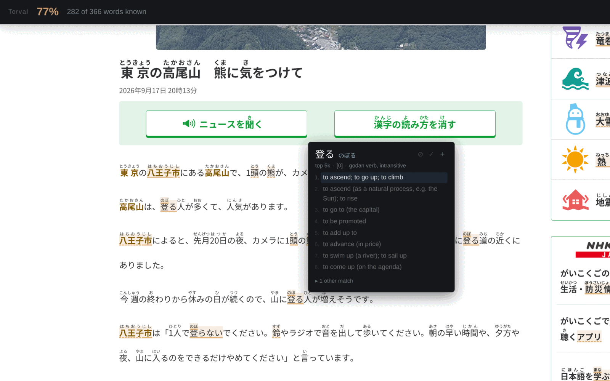
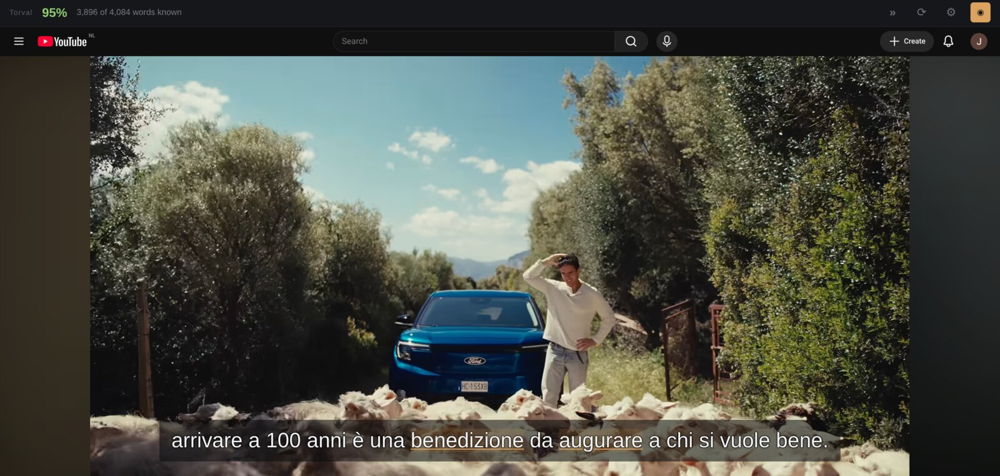
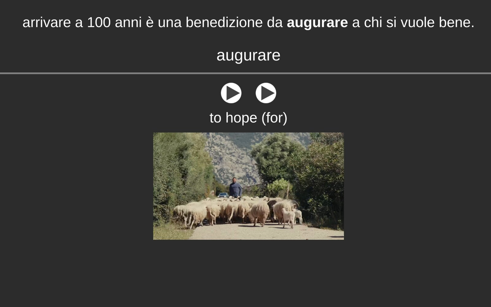

A pop-up dictionary for Japanese, Italian and Spanish that runs entirely in your browser, tells you how much of a page you already know, and puts any word onto an Anki card in one click.
Not in the stores yet. Until then the repository has a build you can load yourself.

Hold Shift, hover, read. Conjugation and inflection are handled, so 食べなかった finds 食べる and hablábamos finds hablar. Italian and Spanish nouns come with their article.
One number across the top: how much of the page is built from words you have marked as known. On a video it is measured against the whole transcript before you press play. Optional, and off until you ask.
On YouTube and Netflix it times every line itself. Step between them with A and D, replay the one you are on, and hover the words in it like any other text.
Into your own collection through AnkiConnect, into whatever note type you use. Pitch accent for Japanese, the stressed vowel for Italian and Spanish.

The first screen asks. The answer reads that language's dictionary into your browser, which takes a minute once. Changing language later loses nothing: each keeps its own words.
That is the whole of it. No clicking, no selecting. Let go and the popup goes away. Anywhere there is text.
Optional, and off until you turn it on under Settings → Words. Press 2 on a word you know, 3 on one you never want to be told about again. The percentage is measured against that list, so it means little on your first day and a great deal by your second week. An Anki deck can hand over its words in one go.
A back, D forward. Torval fetches the subtitle file and works out where every line begins and ends, so it can take you to the start of one and play it again.
Install AnkiConnect, leave Anki open, and map your fields once under Settings → Anki. After that + makes the card: the word, the sentence, the definitions, and on a video the frame and the line as it was spoken. No note type you like? Use this one.

Click the Torval button in the toolbar once per tab. A protected video will not hand its pixels to a script, so Torval photographs the window instead, and the browser allows neither that nor the recording until the add-on has been used on the tab.
The sound needs Chrome. It has to come off the tab, and Chrome is the only browser that will hand a tab's audio to an add-on (Mozilla bug 1541425, open since 2019). There is no way around it.
The subtitles have to be showing. Netflix hands its subtitle file to nobody, so Torval reads the lines off the screen. It asks the player to turn your language on by itself, and where that does not take, choose it in the player's own menu.
Torval says on the card itself which of the two is missing.
No account, no telemetry, no analytics, no server. The dictionaries ship inside the add-on. Nothing you read, look up, mark or add to Anki leaves your computer.
The whole privacy policy. It is short.
Nothing, and there is no paid version behind it. There are no servers to pay for and no accounts to run.